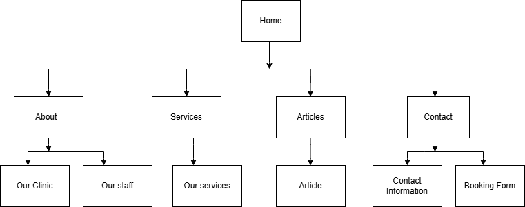

Name: Linah Jepleting
The goal of the 100Smiles Dental Care website is to increase the number of online appointment inquiries by 20% within three months after its launch. This will be achieved by enhancing navigation, employing obvious calls-to-action (CTAs) and showcasing dental services in a manner that encourages users to contact the clinic.
The website's success will be measured by the number of appointments booked through the website. This includes the phone calls made through the contact us page or the emails sent via the email link. If the number of patients increases after the website is launched then it is safe to say that the website is successful.
The website is intended for a wide range of users including families, young adults and elderly patients looking for reliable, up-to-date and dental information that is simple and easy to understand. This audience is supported by the website's use of readable fonts, high contrast colours, clear language, easy navigation and responsive layouts that are suitable for users of all ages and levels of digital proficiency.
